Two RAG systems shipped at a regulated lottery operator. The customer support agent runs on LangGraph, Pinecone, and OpenAI API, with concurrent guardrails on the inbound and answers grounded in retrieved context. The internal document search engine indexes 1,227 private files across PDF, DOCX, XLSX, and PPTX, with format aware chunking and an evaluation gate (Recall@K, MRR, Hit@1, RAGAS faithfulness) for improving retrieval and blocking regression. Based in Seoul. Native English and Korean.
A production RAG agent for customer support. Built on LangGraph, Python, Pinecone, with OpenAI API integrations. Concurrent guardrails screen for prompt injection, code injection, and abuse before the model is invoked. Conversations escalate to a human agent when model confidence falls below threshold.
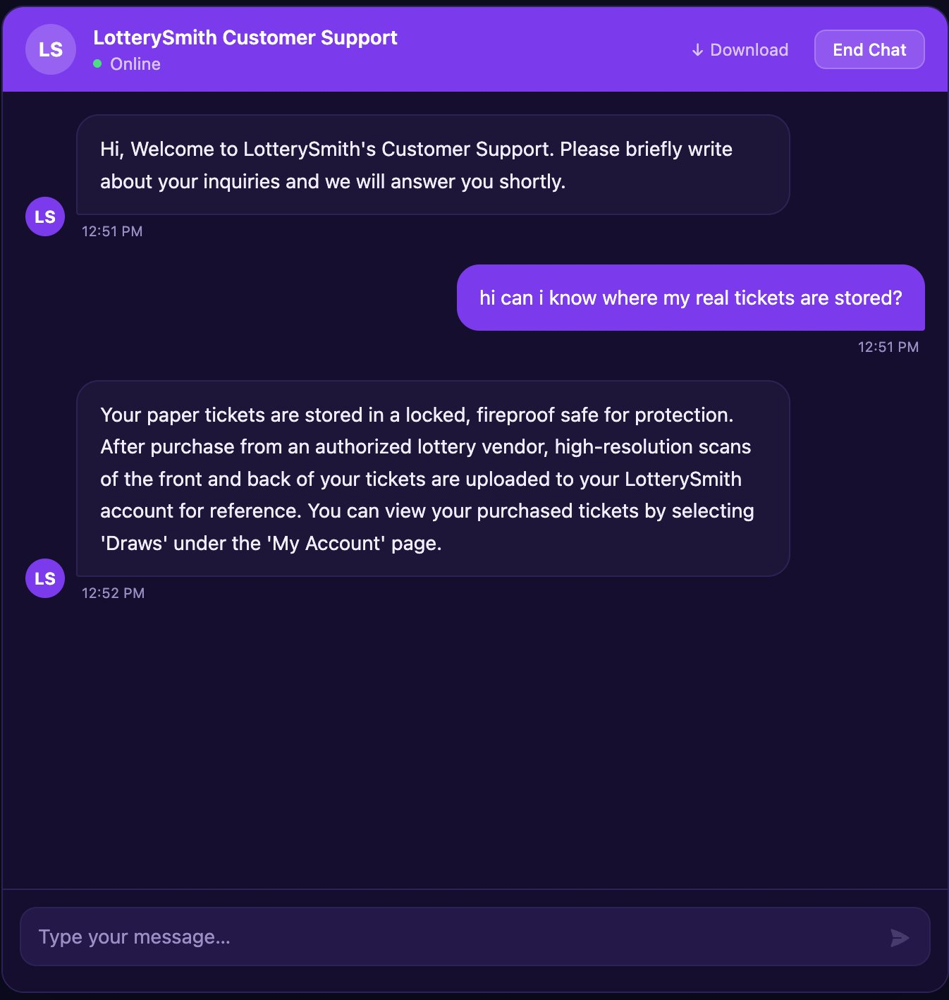
Chat UI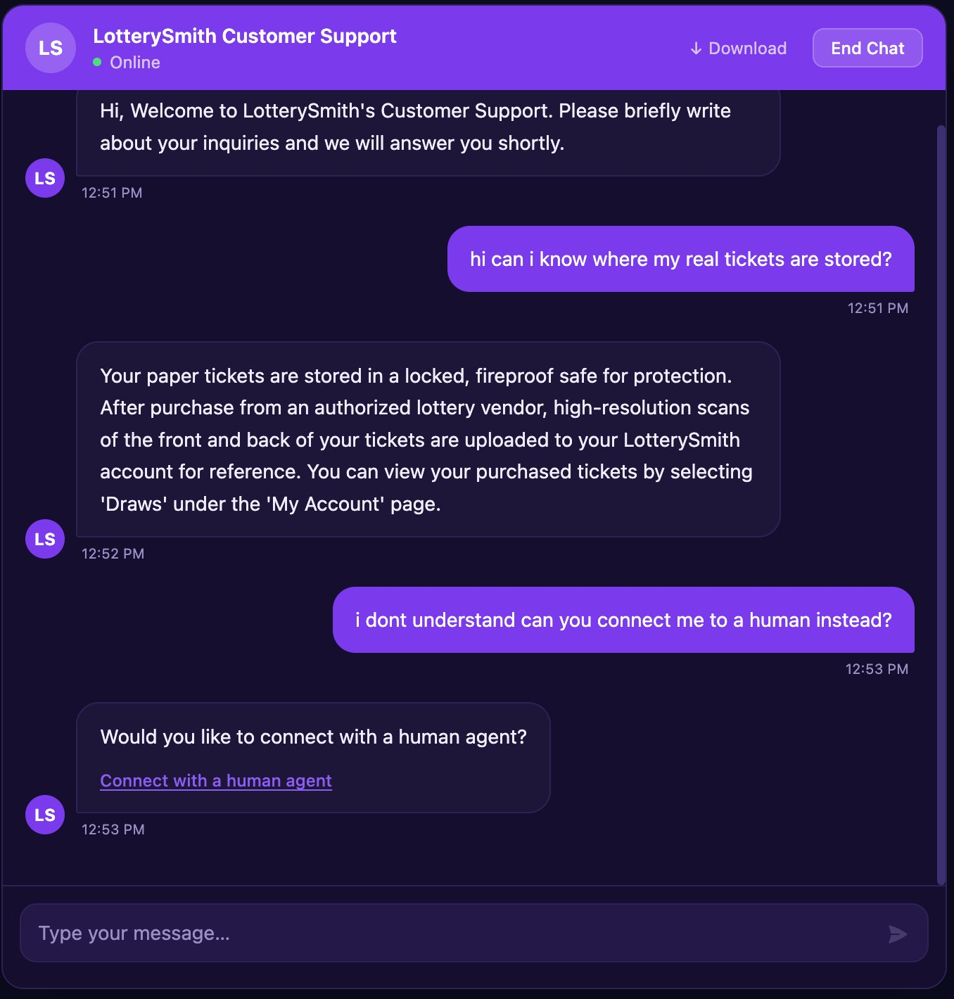
Human Escalation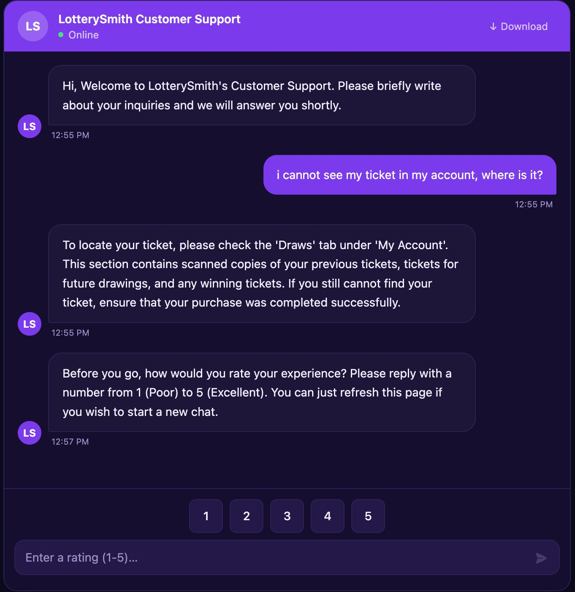
Rating Scores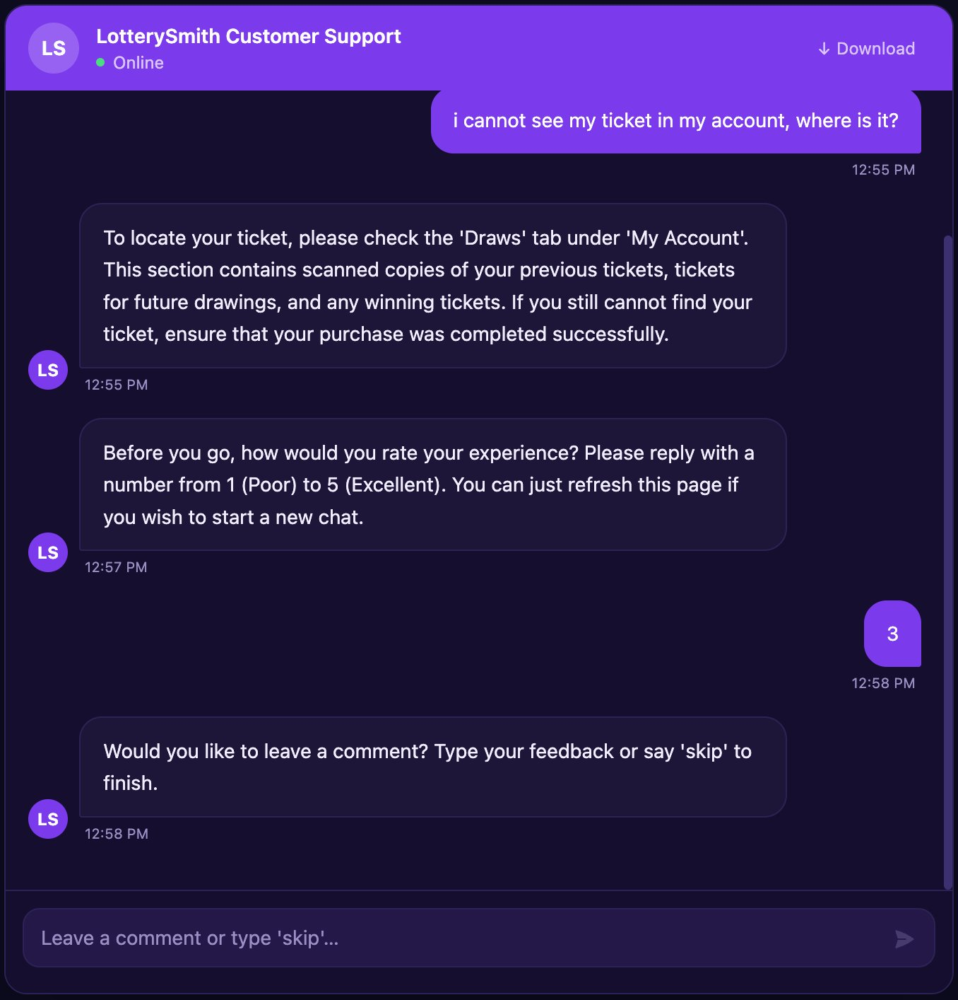
Rating FeedbackFive table schema for sessions, messages, escalations, ratings, and violations, with foreign key relationships routed through session_id. Real time message persistence visible in the data view. The full stack runs as a three container Docker Compose deployment: app, Postgres, and Redis, networked under the chatbot Compose project.
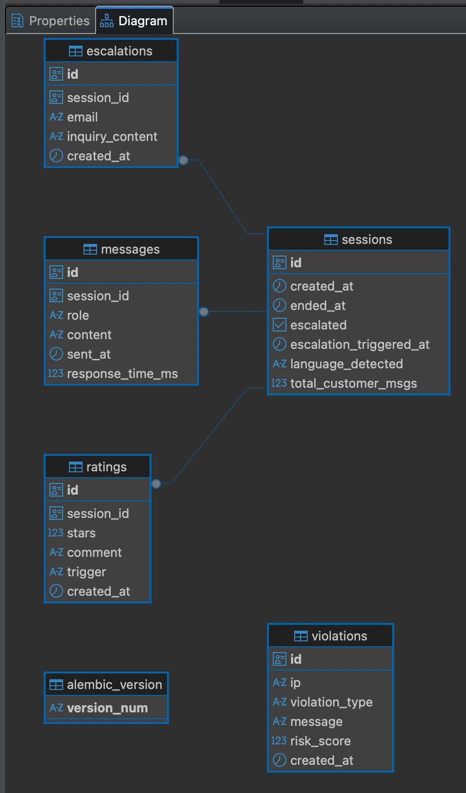
Database Schema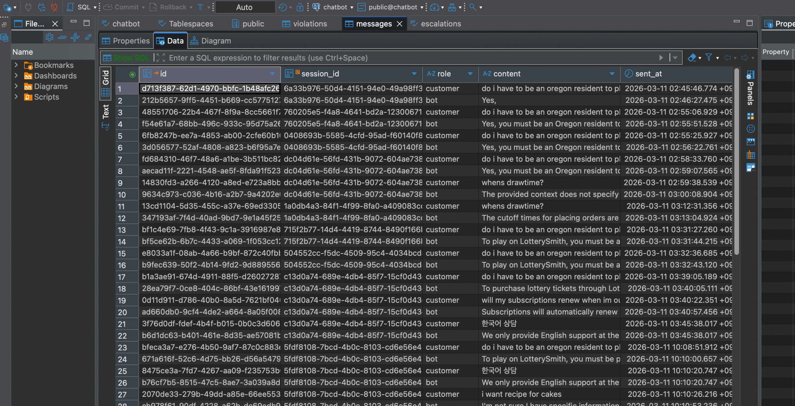
MessageLogs through Postgres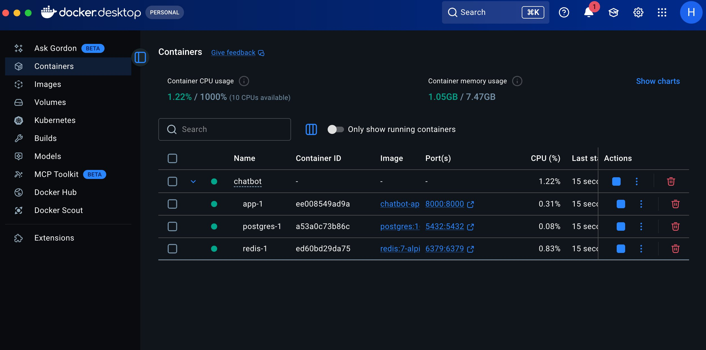
Docker ContainersThe agent is a StateGraph: retrieve → check_confidence → generate → check_escalation. Each customer turn pulls top K=4 chunks from Pinecone over bge-m3 1024 dimensional embeddings (cosine). Generation originally ran on Qwen3:8b via Ollama with 5 turn history. Average response time landed around 2 minutes, which was unworkable for live support. The model layer was swapped to the OpenAI API with 10 turn history, dropping average response time to roughly 5 seconds and cutting infrastructure cost by 98% versus the EC2 hosted Ollama alternative. Every response carries retrieval scores and source citations for logging.
When all retrieval scores fall below threshold, check_confidence sets low_confidence=true and the generate node swaps to a second system prompt that returns only the canned offer "Would you like to connect with a human agent?" The model is structurally prevented from improvising when retrieval has failed.
An upstream FastAPI dependency rejects already-blocked IPs against the Redis blocklist before the request enters the handler. Inside the handler, all checks run concurrently through asyncio.gather and verdicts evaluate in two tiers. The advisory tier is non blocking and covers language detection and gibberish detection. The blocking tier covers LLM Guard prompt injection, a 16 language code scanner, custom exfiltration regex, profanity, and a sliding window rate limit. A blocking hit writes a violation row and triggers a 5 minute Redis IP block.
The prompt injection scanner produced false positives on legitimate password recovery and login help phrasing ("I forgot my password", "I can't sign in"), so a domain specific allowlist of regex patterns overrides the scanner verdict for those cases. The override is logged with the risk score so the bypass is auditable.
(1) ≥10 customer turns, (2) explicit human request keyword match, (3) post low confidence affirmation. Confidence threshold (all Pinecone scores < 0.5) surfaces the inline connect to a human agent handoff.
tenacity retries with backoff, asyncio.Semaphore on LLM concurrency, 120s LLM timeout with 504 fallback, scanner pre warming on startup, best effort DB persistence. Documented in an internal technical specification.
from langgraph.graph import END, START, StateGraph from agent.nodes import ( check_confidence, check_escalation, generate, retrieve, ) from agent.state import AgentState def build_graph() -> StateGraph: graph = StateGraph(AgentState) graph.add_node("retrieve", retrieve) graph.add_node("check_confidence", check_confidence) graph.add_node("generate", generate) graph.add_node("check_escalation", check_escalation) graph.add_edge(START, "retrieve") graph.add_edge("retrieve", "check_confidence") graph.add_edge("check_confidence", "generate") graph.add_edge("generate", "check_escalation") graph.add_edge("check_escalation", END) return graph.compile() agent_graph = build_graph()
An upstream FastAPI dependency, Depends(require_not_blocked), queries the Redis blocklist and rejects already-blocked IPs before the handler body executes. Inside the handler, five guardrail checks (language, gibberish, jailbreak, profanity, rate limit) and the Redis session fetch run inside one asyncio.gather. Sync scanners are pushed to the threadpool with asyncio.to_thread so they don't block the event loop. Verdicts are then evaluated in tier order: advisory checks return canned messages without blocking the IP; blocking checks write a violation row and trigger a 5-minute Redis block.
@router.post("/chat", response_model=ChatResponse) @limiter.limit("60/minute") async def chat( request: Request, body: ChatRequest, redis: aioredis.Redis = Depends(get_redis), db: AsyncSession = Depends(get_db), ip: str = Depends(require_not_blocked), ): non_english, gibberish, (jailbreak, reason, score), profane, rate_abused, session_state = ( await asyncio.gather( asyncio.to_thread(is_non_english, body.message), asyncio.to_thread(is_gibberish, body.message), asyncio.to_thread(is_jailbreak, body.message), asyncio.to_thread(is_profane, body.message), check_rate_abuse(redis, ip), session_store.get_session(redis, body.session_token), ) ) if non_english: return await _canned(CANNED_NON_ENGLISH, language_blocked=True) if gibberish: return await _canned(CANNED_GIBBERISH) if jailbreak or profane: await _block_for_violation( redis, db, ip, ViolationType(reason) if jailbreak else ViolationType.profanity, body.message, score, ) if rate_abused: await _block_for_violation(redis, db, ip, ViolationType.rate_abuse, body.message) try: result = await asyncio.wait_for( agent_graph.ainvoke(graph_input), timeout=settings.llm_timeout_seconds, ) except asyncio.TimeoutError: raise HTTPException(504, "AI service timed out. Please try again shortly.")
Trigger 1 fires on the customer's 10th turn. Trigger 2 fires on a regex match against an explicit human-request phrase. Trigger 3 only fires when the previous bot turn contained the exact handoff offer string and the customer's reply matches an affirmative only regex, a two-turn lookback so a generic "yes" earlier in the conversation doesn't escalate prematurely.
_HUMAN_REQUEST_RE = re.compile(
r"\b(human|person|agent|representative|rep|staff|operator|someone)\b"
r"|\bspeak\s+(to|with)\b|\btalk\s+(to|with)\b"
r"|\bconnect\s+(me|with)\b|\btransfer\s+me\b"
r"|\breal\s+(person|human|agent)\b"
r"|\blive\s+(agent|support|chat|person)\b",
re.IGNORECASE,
)
_ESCALATION_OFFER = "Would you like to connect with a human agent?"
_AFFIRM_RE = re.compile(
r"^\s*"
r"(y(es|eah|ep|ea|up)?|sure|ok(ay)?|absolutely|definitely|certainly"
r"|please|go\s+ahead|of\s+course|i'?d?\s+(like|love)\s+(to|that))"
r"\s*[.\!]?\s*$",
re.IGNORECASE,
)
def check_escalation(state: AgentState) -> dict:
if state.get("escalation_triggered"):
return {}
if state.get("customer_message_count", 0) >= 10:
return {"escalation_triggered": True}
if _HUMAN_REQUEST_RE.search(state.get("current_input", "")):
return {"escalation_triggered": True}
messages = state.get("messages", [])
if len(messages) >= 3:
prev_bot_msg = messages[-3]
if (
isinstance(prev_bot_msg, AIMessage)
and _ESCALATION_OFFER in prev_bot_msg.content
and _AFFIRM_RE.search(state.get("current_input", ""))
):
return {"escalation_triggered": True}
return {}
INCR and EXPIRE in a single Redis round-trip. Avoids the race where two concurrent requests both INCR a fresh key before either sets EXPIRE, which would leave the key without a TTL and miscount the window indefinitely. The Lua script is atomic by Redis semantics, so there is no path where the counter can be incremented without the expiry being set.
_RATE_LUA = """ local count = redis.call('INCR', KEYS[1]) if count == 1 then redis.call('EXPIRE', KEYS[1], ARGV[1]) end return count """ async def check_rate_abuse(redis, ip: str) -> bool: settings = get_settings() key = f"rate:{ip}" count = await redis.eval(_RATE_LUA, 1, key, settings.rate_window_seconds) return count > settings.rate_max_per_window
On a blocking violation the audit row is committed to Postgres before Redis sets the IP block. Even if Redis is unreachable when the block is attempted, the violation is already durable. The audit trail can never be silently dropped because of an infrastructure failure, which matters for any future review of why a customer was blocked.
async def _block_for_violation( redis: aioredis.Redis, db: AsyncSession, ip: str, vtype: ViolationType, message: str, risk_score: float | None = None, ) -> None: await crud.create_violation(db, ip, vtype, message, risk_score) await db.commit() await set_block(redis, ip) raise HTTPException(status_code=403, detail=BLOCK_MESSAGE)
A RAG search engine over a thousand private documents across four file types: PDF, DOCX, XLSX, and PPTX. Each format is chunked to preserve its native structure, so a slide stays a slide and a spreadsheet keeps its column headers. Citations link directly to the original source file, which the user can search in place or download. Each pull request runs a golden-set JSONL evaluation (Recall@K, MRR, Hit@1, RAGAS faithfulness) on GitHub Actions, with merges blocked on regression against the main baseline.
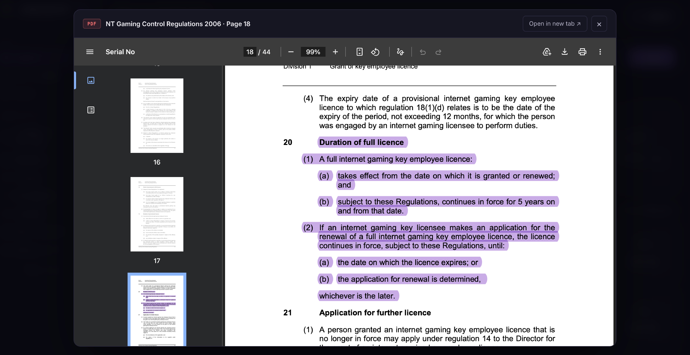
Citation Example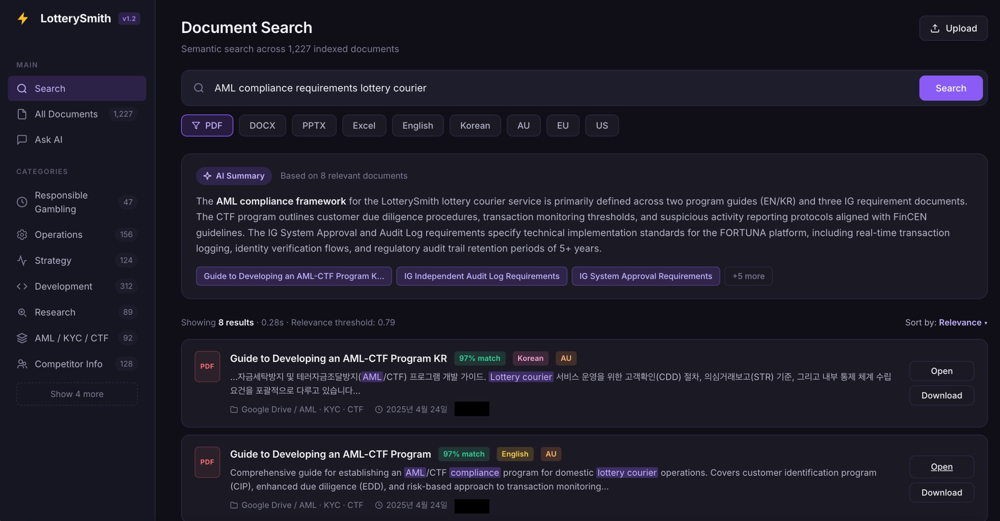
Active Filter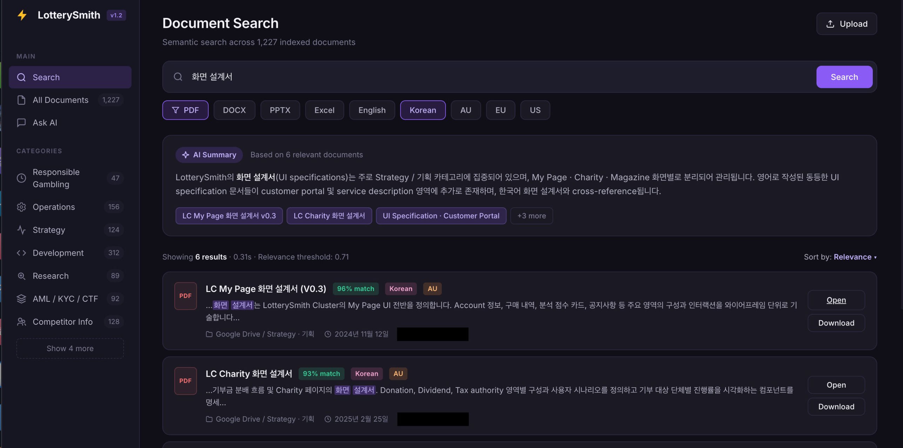
Bilingual Query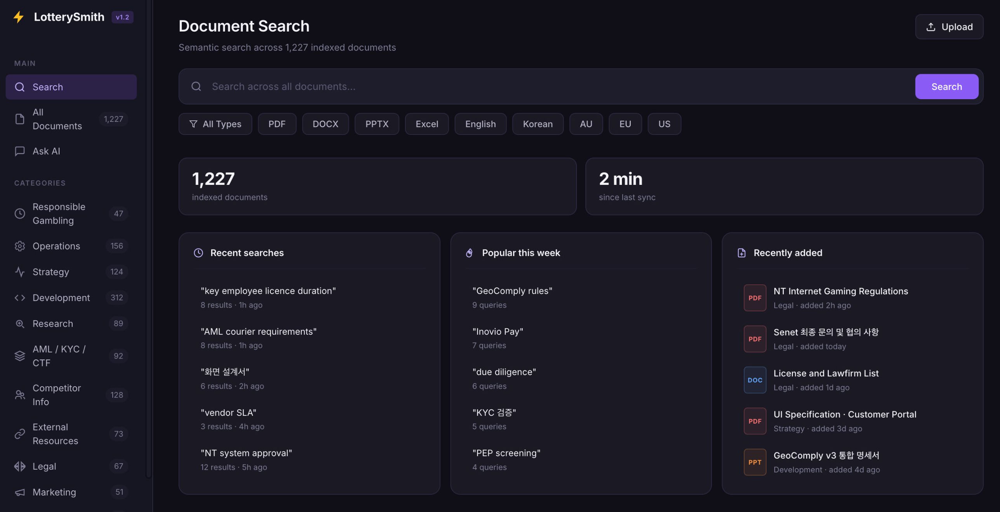
Main UI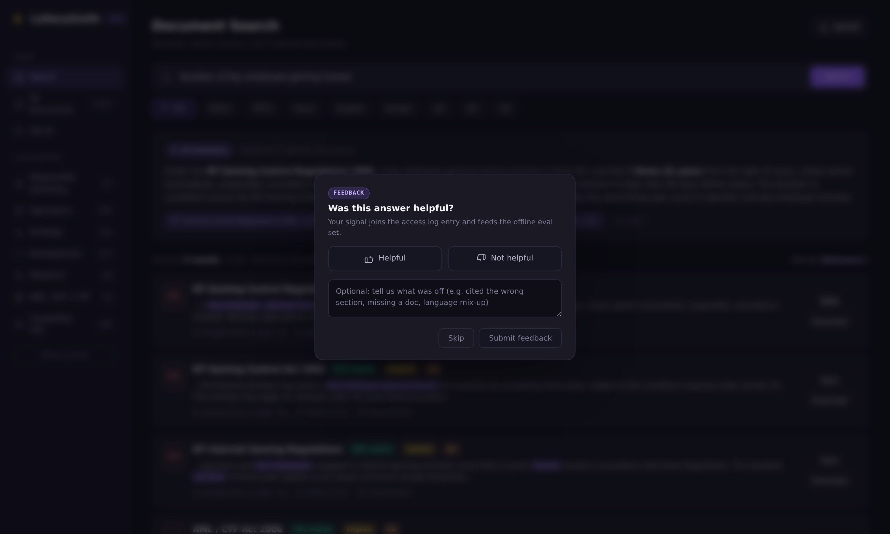
Feedback UIA generic recursive splitter would cut PPTX slides in half, strip XLSX column headers, and ignore DOCX heading hierarchy. So the ingester dispatches: chunk_by_title for PDF and DOCX, per slide for PPTX, per sheet (column headers prepended) for XLSX. Each chunk gets a human readable source locator: slide 12: Q3 Roadmap, sheet 'Q3', rows 1-50, page 4.
Weekly: golden set JSONL versioned in Git: Recall@K / MRR / Hit@1, and RAGAS faithfulness.
Continuous: per answer thumbs feedback and citation clickthrough. GitHub Actions CI blocks PRs on retrieval and prompt regressions.
This was a solo build, but I wanted hands on CI experience for a team setting, so every change went through a PR against myself with the eval gate enforced as a required check.
Path traversal hardening, content addressed file storage (SHA 256 dedupe), prompt injection via document mitigations, 90 day retention on anonymous query logs.
JSONL is the source of truth. Each entry records the engineer who added it and the feedback signal behind it, so the eval set's history is readable directly from git.
{"id": "q_0142",
"query": "key employee licence duration",
"expected_doc_ids": ["doc_nt_gaming_2006"],
"expected_answer": "Continues in force for 5 years from the date granted or renewed.",
"tags": ["legal", "licensing", "AU"],
"created_by": "jhin",
"created_at": "2026-04-25"}
{"id": "q_0143",
"query": "AML courier requirements",
"expected_doc_ids": ["doc_aml_ctf_en", "doc_aml_ctf_kr"],
"expected_answer": "Programs must cover CIP, EDD thresholds, and risk-based monitoring.",
"tags": ["compliance", "AML", "AU"],
"created_by": "jhin",
"created_at": "2026-04-26"}
Faithfulness scores whether the answer is supported by the retrieved chunks. A low score means the model fabricated something the context never said. Computed by RAGAS once per golden entry and aggregated across the run.
from ragas import evaluate from ragas.metrics import faithfulness from datasets import Dataset def score_faithfulness(query: str, answer: str, contexts: list[str]) -> float: ds = Dataset.from_dict({ "question": [query], "answer": [answer], "contexts": [contexts], }) result = evaluate(ds, metrics=[faithfulness]) return float(result["faithfulness"])
Three deterministic retrieval metrics computed from the retrieved chunk IDs against expected_doc_ids. Recall@K is the fraction of expected docs surfaced in the top K. MRR rewards ranking the right doc earlier. Hit@1 is the strictest, requiring the top retrieved result to appear in the expected set.
def recall_at_k(retrieved: list[str], expected: list[str], k: int = 5) -> float: top_k = retrieved[:k] hits = sum(1 for d in expected if d in top_k) return hits / len(expected) if expected else 0.0 def mrr(retrieved: list[str], expected: list[str]) -> float: for i, doc in enumerate(retrieved, start=1): if doc in expected: return 1.0 / i return 0.0 def hit_at_1(retrieved: list[str], expected: list[str]) -> bool: return bool(retrieved) and retrieved[0] in expected
A security and data handling framework built for international operations across three jurisdictions: US, AU, and EU/GDPR. Includes payment tokenization architecture, vendor DPAs and security questionnaires, privacy and internal data policies, and an incident response process. The audit discipline behind this work shaped the evaluation, escalation, and citation provenance in the AI systems above.
Drafted and negotiated DPAs and vendor security questionnaires with payment, identity, and infrastructure vendors including Twilio, GeoComply, IDComply, Inovio Pay. Held and scheduled the meetings, ran the demos, and wrote the funding reports that justified each external service to admin and finance, who pushed back on why each API integration was necessary.
Architected a partial tokenization and in memory processing approach so the most sensitive unique identifiers never enter company servers. Card PAN goes directly from the frontend browser to the PG provider; the server only ever sees a one time payment token. CVC and expiration are held in memory as a parameter to the PG API call, then permanently deleted.
No storage policy: no card numbers, expiration dates, or CVCs in any database, system log, or file storage.
| Classification | Target | Algorithm |
|---|---|---|
| Authentication credentials | Passwords | bcrypt |
| Identifying information | Name, contact, address | AES-256-CBC |
| Authentication sessions | Login tokens | JWT |
| Communication security | API + web traffic | TLS 1.2 / 1.3 end to end |
Authored Terms & Conditions, Privacy Policy, Internal Data Policy, and FAQ across three jurisdictions; designed the platform to be audit ready as the company grows into formal certification.
Led internal incident response: triaged events, ran root cause review, documented remediation, updated controls. The same workflow shaped the chatbot's violations audit trail and the search engine's citation provenance.